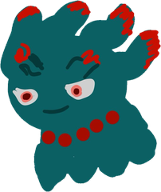
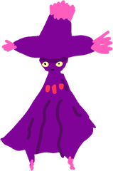
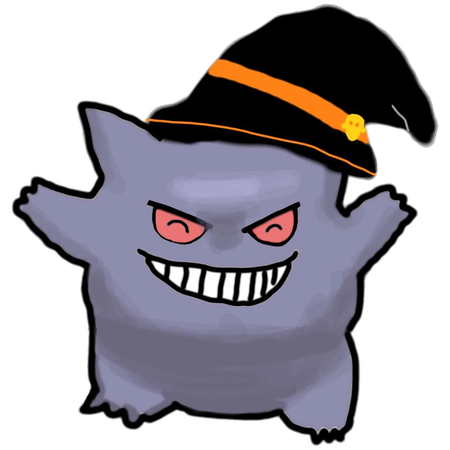
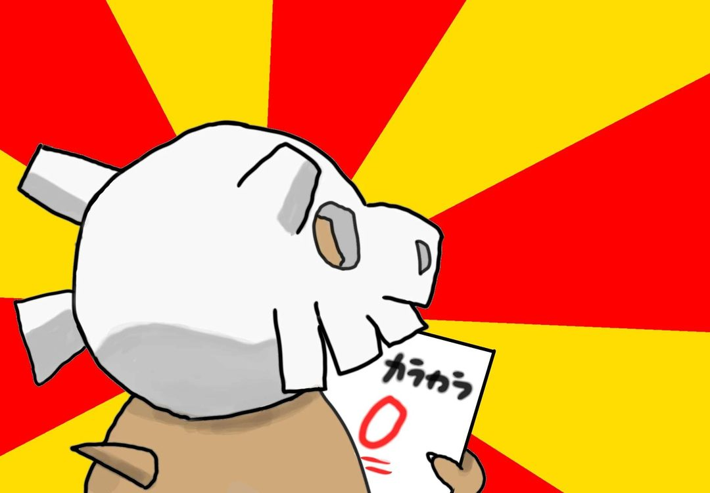

この説明は、左の ▼ を押すと閉じることができます。▶ を押すと、もう一度開けます。
DAY1〜DAY7 も同じように開いたり閉じたりできます。
点数と内訳は自動で計算されます。いちばん高い点数は、画面上の「★ ベストスコア」にいつも出ています。まちがえたポケモンは「✕」で消せます。
投稿文が入っていなかったときは、投稿欄を長押しして「ペースト」を押してください（「保存・共有する」を押したときにコピーされています）。画像だけ取っておきたいときは、X の代わりに「画像を保存」を選ぶと写真アプリに入ります。
iPhone（Safari）
iPhone（Chrome）
Android（Chrome）
⚠ iPhone では、ホーム画面のアイコンから開くと、Safari や Chrome で入れた記録が出ないことがあります（記録の保存場所が別になるため）。ホーム画面に追加したら、そのあとはアイコンから使うのがおすすめです。追加するときに「Webアプリとして開く」が出たらオフにすると、ブラウザと同じ記録を使えます。

★✦★
シルフスコープを使うと、👻 が付いたポケモンのうち一番点の高い1体が2倍になります。
記録はこの端末のブラウザ内にのみ保存されます。他の端末では見られません。
写真は保存されないため、ページを開き直すと消えます（投稿用画像を作るときだけ使います）。